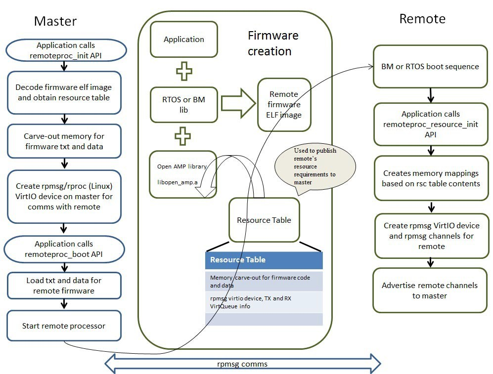
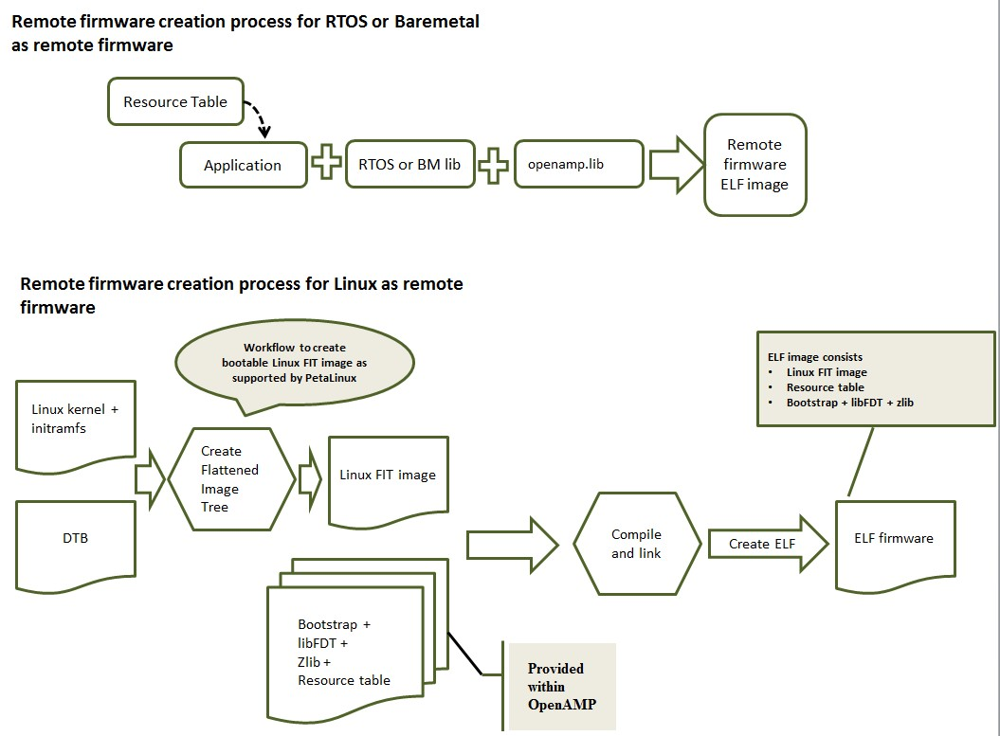

Life Cycle Management
The LCM(Life Cycle Management) component of OpenAMP is known as remoteproc. Remoteproc APIs provided by the OpenAMP Framework allow software applications running on the master processor to manage the life cycle of a remote processor and its software context. A complete description of the remoteproc workflow and APIs are provided.
LCM Overview
The remoteproc APIs provide life cycle management of remote processors by performing five essential functions.
Allow the master software applications to load the code and data sections of the remote firmware image to appropriate locations in memory for in-place execution
Release the remote processor from reset to start execution of the remote firmware
Establish RPMsg communication channels for run-time communications with the remote context
Shut down the remote software context and processor when its services are not needed
Provide an API for use in the remote application context that allows the remote applications to seamlessly initialize the remoteproc system on the remote side and establish communication channels with the master context
The remoteproc component currently supports Executable and Linkable Format (ELF) for the remote firmware; however, the framework can be easily extended to support other image formats. The remote firmware image publishes the system resources it requires to remoteproc on the master using a statically linked resource table data structure. The resource table data structure contains entries that define the system resources required by the remote firmware (for example, contiguous memory carve-outs required by remote firmware’s code and data sections), and features/functionality supported by the remote firmware (like virtio devices and their configuration information required for RPMsg-based IPC).
The remoteproc APIs on the master processor use the information published through the firmware resource table to allocate appropriate system resources and to create virtio devices for IPC with the remote software context. The following figure illustrates the resource table usage.
When the application on the master calls to the remoteproc_init API, it performs the following:
Causes remoteproc to fetch the firmware ELF image and decode it
Obtains the resource table and parses it to handle entries
Carves out memory for remote firmware before creating virtio devices for communications with remote context
The master application then performs the following actions:
Calls the remoteproc_boot API to boot the remote context
Locates the code and data sections of the remote firmware image
Releases the remote processor to start execution of the remote firmware.
After the remote application is running on the remote processor, the remote application calls the remoteproc_resource_init API to create the virtio/RPMsg devices required for IPC with the master context. Invocation of this API causes remoteproc on the remote context to use the rpmsg name service announcement feature to advertise the rpmsg channels served by the remote application.
The master receives the advertisement messages and performs the following tasks:
Invokes the channel created callback registered by the master application
Responds to remote context with a name service acknowledgement message
After the acknowledgement is received from master, remoteproc on the remote side invokes the RPMsg channel-created callback registered by the remote application. The RPMsg channel is established at this point. All RPMsg APIs can be used subsequently on both sides for run time communications between the master and remote software contexts.
To shut down the remote processor/firmware, the remoteproc_shutdown API is to be used from the master context. Invoking this API with the desired remoteproc instance handle asynchronously shuts down the remote processor. Using this API directly does not allow for graceful shutdown of remote context.
For gracefully bringing down the remote context, the following steps can be performed:
The master application sends an application-specific shutdown message to the remote context
The remote application cleans up application resources, sends a shutdown acknowledge to master, and invokes remoteproc_resource_deinit API to deinitialize remoteproc on the remote side.
On receiving the shutdown acknowledge message, the master application invokes the remoteproc_shutdown API to shut down the remote processor and de-initialize remoteproc using remoteproc_deinit on its side.
Creation and Boot of Remote Firmware Using remoteproc
You can create and boot remote firmware for Linux, RTOS, and bare metal-based remote applications using remoteproc. The following procedure provides general steps for creating and executing remote firmware on a supported platform.
The following figure illustrates the remote firmware creation process.
Defining the Resource Table and Creating the Remote ELF Image
Creating a remote image through remoteproc begins by defining the resource table and creating the remote ELF image.
Procedure
Define the resource table structure in the application. The resource table must minimally contain carve-out and VirtIO device information for IPC.
As an example, please refer to the resource table defined in the bare metal remote echo test application at <open_amp>/apps/machine/zynq/rsc_table.c. The resource table contains entries for memory carve-out and virtio device resources. The memory carve-out entry contains info like firmware ELF image start address and size. The virtio device resource contains virtio device features, vring addresses, size, and alignment information. The resource table data structure is placed in the resource table section of remote firmware ELF image using compiler directives.
After defining the resource table and creating the OpenAMP Framework library, link the remote application with the RTOS or bare metal library and the OpenAMP Framework library to create a remote firmware ELF image capable of in-place execution from its pre-determined memory region. (The pre-determined memory region is determined according to guidelines provided by section.)
For remote Linux, step 1 describes modifications to be made to the resource table. The previous flow figures shows the high level steps involved in creation of the remote Linux firmware image. The flow shows to create a Linux FIT image that encapsulates the Linux kernel image, Device Tree Blob (DTB), and initramfs.
The user applications and kernel drivers required on the remote Linux context could be built into the initramfs or moved to the remote root file system as needed after boot. The FIT image is linked along with a boot strap package provided within the OpenAMP Framework. The bootstrap implements the functionality required to decode the FIT image (using libfdt), uncompress the Linux kernel image (using zlib) and locate the kernel image, initramfs, and DTB in RAM. It can also set up the ARM general purpose registers with arguments to boot Linux, and transfer control to the Linux entry point.
Making Remote Firmware Accessible to the Master
After creating the remote firmware’s ELF image, you need to make it accessible to remoteproc in the master context.
Procedure
If the RTOS- or bare metal-based master software context has a file system, place this firmware ELF image in the file system.
Implement the get_firmware API in firmware.c (in the <open_amp>/lib/common/ directory) to fetch the remote firmware image by name from the file system.
For AMP use cases with Linux as master, place the firmware application in the root file system for use by Linux remoteproc platform drivers.
In the OpenAMP Framework reference port to Zynq ZC702EVK, the bare metal library used by the master software applications do not include a file system. Therefore, the remote image is packaged along with the master ELF image. The remote ELF image is converted to an object file using “objcpy” available in the “GCC bin-utils”. This object file is further linked with the master ELF image.
The remoteproc component on the master uses the start and end symbols from the remote object files to get the remote ELF image base and size. Since the logistics used by the master to obtain a remote firmware image is deployment specific, the config_get_firmware API in firmware.c in the <open_amp>/lib/common/ directory implements all the logistics described in this procedure to enable the OpenAMP Framework remoteproc on the master to obtain the remote firmware image.
You can now use the remoteproc APIs.